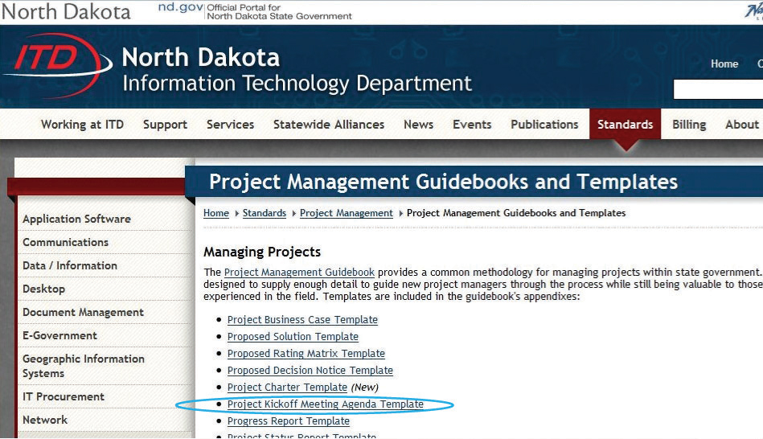

A popular tool for categorizing personality types is the Myers-Briggs Type Indicator (MBTI). In this exercise, you learn about the MBTI and other tests based on the personality types described by psychologist Carl Jung.
The Myers-Briggs test is administered and interpreted by trained and certified people who help explain the meaning of the results. This is an important function because terms like introvert do not mean what many people normally assume them to mean, and self-evaluation can be misinterpreted. It can still be instructive to take one of the free, online tests that are similar to the MBTI.
Display the test score, as shown in Figure 5.13 "Example of a Result", except it may be any of the sixteen types.
Review your work and use the following rubric to determine its adequacy:
| Element | Best | Adequate | Poor |
|---|---|---|---|
| File name | Ch05MBStudentName.doc | Ch05MBStudentName.docx | Another file name |
| Describe the characteristics of the Myers-Briggs personality profile | First line with name; four screen captures that show one of the types in the table, a screen from the All types are equal page, the results of your test, and that type on the table | Same as Best | Some screens missing or not matching the test result |
In the project management profession, developing strong people skills helps management understand how to deal with personality types, like the Myers-Briggs test uses the emotional intelligence test site to develop strong career building skills. Mind Tools helps develop strong people skills.
Start a web browser and go to the Mind Tools website at http://www.mindtools.com/pages/article/newCDV_59.htm.
Read the first page, including the sections titled
In a browser, type http://www.ihhp.com/testsite.htm.
Figure 5.15 Institute for Health and Human Potential homepage

Source: Courtesy of The Institute for Health and Human Potential.
Review your work and use the following rubric to determine its adequacy:
| Element | Best | Adequate | Poor |
|---|---|---|---|
| File name | Ch05EQStudentName.doc | Ch05EQStudentName.docx | Another file name |
| Describe the characteristics of emotional intelligence | First line with name; four screen captures that show the video playing and the first few questions of the EQ test; a reflective essay of two hundred to three hundred words in which you describe what you learned and how it might be useful on a project | Correct screen captures with a reflective essay between one hundred and two hundred words | Some screens missing; very brief essay that did not cover both objectives |
Different types of meetings have different objectives. To achieve those objectives, it helps to organize the agenda of the meeting around those objectives and to sequence them properly. Studying examples used by other organizations will assist in choosing an agenda that suits the purpose of a meeting.
Start a web browser program and go to the Project Management Guidebooks and Templates page for the State of North Dakota at http://www.nd.gov/itd/standards/project-management/project-management-guidebooks-and-templates. A list of links displays, as shown in Figure 5.16 "North Dakota Projects"
Figure 5.16 North Dakota Projects
Source: Courtesy of the North Dakota Information Technology Department.
Compare this agenda with the concepts described in the text. Address the following questions:
Review your work and use the following rubric to determine its adequacy:
| Element | Best | Adequate | Poor |
|---|---|---|---|
| File name | Ch05MeetingsStudentName.doc | Ch05MeetingsStudentName | Another file name |
| Locate, download, and analyze meeting agenda examples | Name on first line; screen captures that show the web link in the Project folder of your browser’s favorites and an image of the agenda with your name next to Project; a two-part essay that addresses the two questions with specific references in the text and in the sample agenda to support your analysis | Name on first line; screen captures that show the web link in the Project folder of your browser’s favorites and an image of the agenda with your name next to Project; a single paragraph that addresses the two questions with paraphrased references in the text and in the sample agenda to support your analysis | Missing or incomplete screen captures; an essay that is too general and that doesn’t address the questions or does not demonstrate an intimate familiarity with the text or sample |